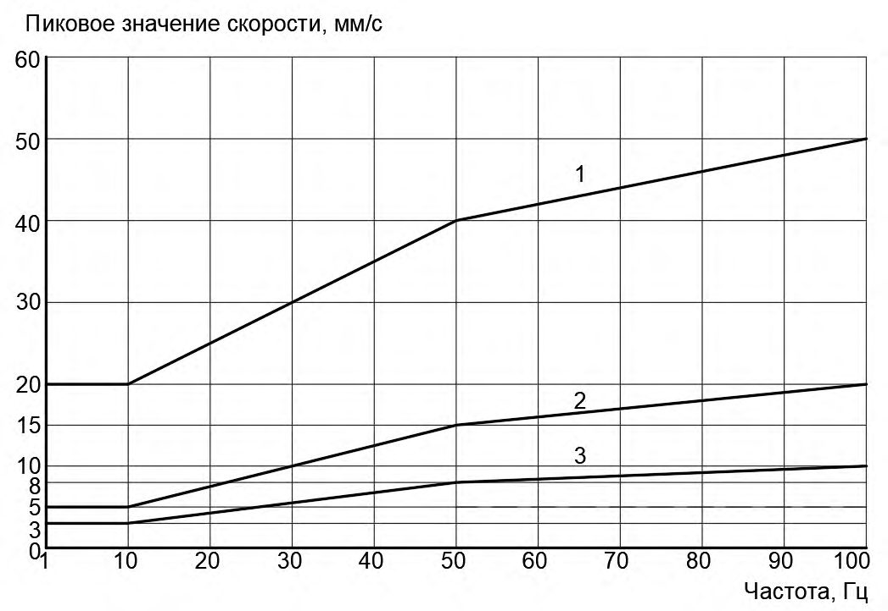
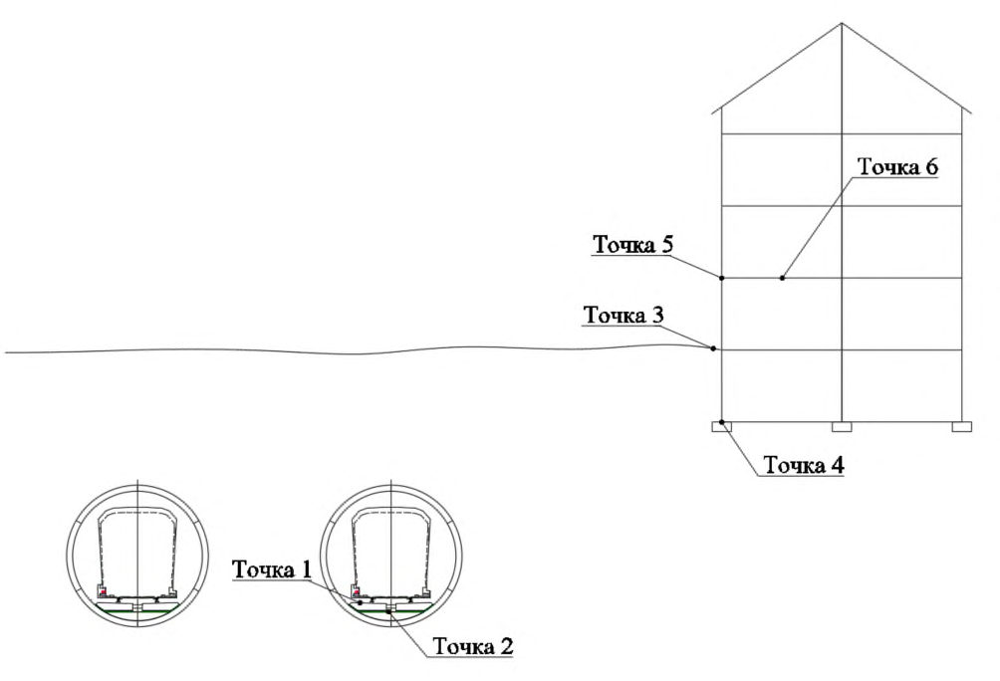
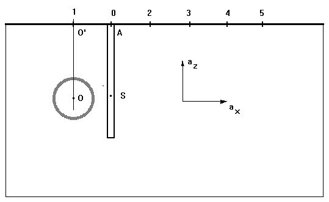
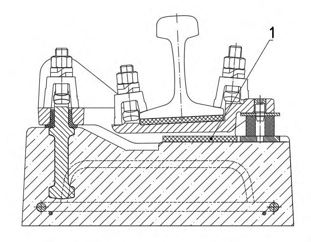
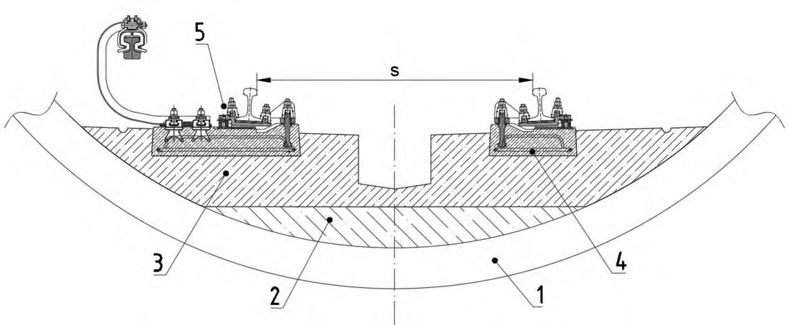
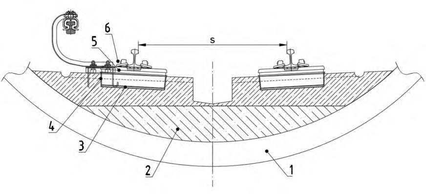
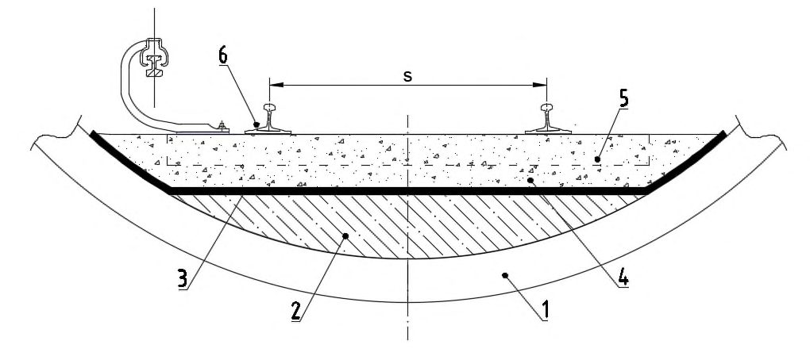
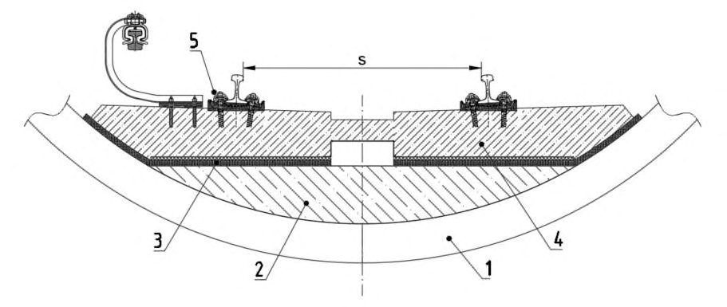

СП 465.1325800.2019 «Здания и сооружения. Защита от вибрации метрополитена. Прав»
О документе: разработчики, утверждение, регистрация, ключевые слова
СВОД ПРАВИЛ
СП 465.1325800.2019
Издание официальное
Москва 2019
1 ИСПОЛНИТЕЛЬ -Федеральное государственное бюджетное учреждение «Научно-исследовательский институт строительной физики Российской академии архитектуры и строительных наук» (НИИСФ РААСН)
- 2 ВНЕСЕН Техническим комитетом по стандартизации ТК 465 «Строительство»
3 ПОДГОТОВЛЕН к утверждению Департаментом градостроительной деятельности и архитектуры Министерства строительства и жилищнокоммунального хозяйства Российской Федерации (Минстрой России)
- 4 УТВЕРЖДЕН приказом Министерства строительства и жилищнокоммунального хозяйства Российской Федерации от 2 декабря 2019 г. № 756/пр и введен в действие с 3 июня 2020 г.
- 5 ЗАРЕГИСТРИРОВАН Федеральным агентством по техническому регулированию и метрологии (Росстандарт)
В случае пересмотра (замены) или отмены настоящего свода правил соответствующее уведомление будет опубликовано в установленном порядке. Соответствующая информация, уведомление и тексты размещаются также в информационной системе общего пользования - на официальном сайте разработчика (Минстрой России) в сети Интернет
© Минстрой России, 2019
Настоящий нормативный документ не может быть полностью или частично воспроизведен, тиражирован и распространен в качестве официального издания на территории Российской Федерации без разрешения Минстроя России
Дата введения - 2020-06-03
УДК ОКС 91.120.125
Ключевые слова: метрополитен, поезд, верхнее строение пути, вибрация, структурный шум, грунт, здание прогноз, защита, источник вибрации, измерение вибрации, снижение вибрации, проектирование, строительство, эксплуатация, динамическая характеристика, виброизоляция, вибродемпфирующий материал, виброизолятор, ограждающая конструкция
| Руководитель организации-разработчика ФГБУ НИИСФ РААСН Директор, д.т.н. | И.Л. Шубин |
|---|---|
| Соисполнитель | |
| Директор Научно исследовательского института строительной Физики Российской академии архитектуры и строительных наук, д.т.н. | И.Л. Шубин |
| Руководитель разработки - директор, д.т.н | И.Л. Шубин |
| Исполнители: | |
| главный научный сотрудник лаборатории 34 д.т.н. | И.Е. Цукерников |
| ведущий научный сотрудник лаборатории 34 к.т.н. | В.А. Смирнов |
| ведущий инженер лаборатории 34 | А.С. Лебедев |
| ведущий инженер лаборатории 34 | М.Ю. Смоляков |
| инженер лаборатории 34 | Д.А. Черкасова |
| Соисполнитель: | |
| Профессор НИУ МГСУ, д.т.н. | Ю.Т. Чернов |
| Технический директор АО «Моспромпроект» | Д.А. Цюпа |
| Заместитель начальника отдела путей и путевого хозяйства АО «Моспромпроект» | Л. В. Грошев |
| Заведующий отделом гигиены труда и гигиены источников неионизирующих излучений ФБУЗ «Центр гигиены и эпидемиологии по городу Москве» | Е.А. Руднева |
Введение
6 ВВЕДЕН ВПЕРВЫЕ
Свод правил разработан в целях обеспечения требований Федерального закона от 30 декабря 2009 г. № 384-ФЗ «Технический регламент о безопасности зданий и сооружений».
Кроме того, применение настоящего свода правил обеспечивает соблюдение федеральных законов от 30 марта 1999 г. № 52-ФЗ «О санитарноэпидемиологическом благополучии населения», от 27 декабря 2002 г. № 184ФЗ «О техническом регулировании».
Свод правил разработан в развитие СП 120.13330.2012 «СНиП 32-02-2003 Метрополитены» и содержит требования к расчету и проектированию защиты от вибрации и структурного шума, создаваемых подвижным составом метрополитена в помещениях жилых и общественных зданий, расположенных вблизи линий метрополитена.
Свод правил разработан авторским коллективом НИИСФ РААСН (д-р техн. наук И.Л. Шубин , д-р техн. наук И.Е. Цукерников, канд. техн. наук В.А. Смирнов , А.С. Лебедев , М.Ю. Смоляков, Д.А. Черкасова ) при участии НИУ МГСУ (д-р техн. наук Ю.Т. Чернов ), АО «Моспромпроект» ( Д.А. Цюпа , Л.В. Грошев ), ФБУЗ «Центр гигиены и эпидемиологии по г. Москве» ( Е.А. Руднева ).
ЗДАНИЯ И СООРУЖЕНИЯ. ЗАЩИТА ОТ ВИБРАЦИИ МЕТРОПОЛИТЕНА Правила проектирования
Buildings and structures. Protection against vibration of underground lines. Design rules
1Область применения
Настоящий свод правил распространяется на защиту от вибрации и структурного шума, создаваемых подвижным составом линий метрополитена в помещениях жилых, общественных и производственных зданий и сооружений, расположенных вблизи подземных перегонных тоннелей, тупиков, камер съезда и станций метрополитена.
2Нормативные ссылки
В настоящем своде правил использованы нормативные ссылки на следующие документы:
ГОСТ 12248-2010 Грунты. Методы лабораторного определения характеристик прочности и деформируемости
ГОСТ 23961-80 Метрополитены. Габариты приближения строений, оборудования и подвижного состава
ГОСТ 24346-80 Вибрация. Термины и определения
ГОСТ 25100-2011 Грунты. Классификация
ГОСТ 27751-2014 Надежность строительных конструкций и оснований. Основные положения
ГОСТ 31185-2002 (ИСО 10815:1996) Вибрация. Измерения вибрации внутри железнодорожных туннелей при прохождении поездов
ГОСТ 31191.1-2004 (ИСО 2631-1:1997) Вибрация и удар. Измерение общей вибрации и оценка ее воздействия на человека. Часть 1. Общие требования
ГОСТ 31191.2-2004 (ИСО 2631-2:2003) Вибрация и удар. Измерение общей вибрации и оценка ее воздействия на человека. Часть 2. Вибрация внутри зданий
ГОСТ 32192-2013 Надежность в железнодорожной технике. Основные понятия. Термины и определения
ГОСТ 34056-2017 Транспорт железнодорожный. Состав подвижной. Термины и определения
ГОСТ Р ИСО/ТС 10811-1-2007 Вибрация и удар. Вибрация в помещениях с установленным оборудованием. Часть 1. Измерения и оценка
ГОСТ Р 51685-2013 Рельсы железнодорожные. Общие технические условия
ГОСТ Р 52892-2007 Вибрация и удар. Вибрация зданий. Измерение вибрации и оценка ее воздействия на конструкцию
ГОСТ Р 53964-2010 Вибрация. Измерения вибрации сооружений. Руководство по проведению измерений
ГОСТ Р 55056-2012 Транспорт железнодорожный. Основные понятия. Термины и определения
ГОСТ Р 56353-2015 Грунты. Методы лабораторного определения динамических свойств дисперсных грунтов
ГОСТ Р ИСО 2017-1-2011 Вибрация и удар. Упругие системы крепления. Часть 1. Технические данные для применения систем виброизоляции
ГОСТ Р ИСО 2017-2-2011 Вибрация и удар. Упругие системы крепления. Часть 2. Технические данные для применения систем виброизоляции для железнодорожного транспорта
ГОСТ Р ИСО 2017-3-2016 Вибрация и удар. Упругие системы крепления. Часть 3. Технические данные для применения систем виброизоляции при строительстве новых зданий
ГОСТ Р ИСО 2041-2012 Вибрация, удар и контроль технического состояния. Термины и определения
ГОСТ Р ИСО 10137-2016 Основы расчета строительных конструкций. Эксплуатационная надежность зданий в условиях воздействия вибрации
ГОСТ Р ИСО 10846-1-2010 Вибрация. Измерения виброакустических передаточных характеристик упругих элементов конструкций в лабораторных условиях. Часть 1. Общие принципы измерений.
ГОСТ Р ИСО 14837-1-2007 Вибрация. Шум и вибрация, создаваемые движением рельсового транспорта. Часть 1. Общее руководство
СП 16.13330.2017 «СНиП II-23-81* Стальные конструкции» (с изменением № 1)
СП 20.13330.2016 «СНиП 2.01.07-85* Нагрузки и воздействия» (с изменениями № 1, № 2)
СП 22.13330.2016 «СНиП 2.02.01-83* Основания зданий и сооружений» (с изменениями № 1, № 2)
СП 26.13330.2012 «СНиП 2.02.05-87 Фундаменты машин с динамическими нагрузками» (с изменением № 1)
СП 35.13330.2011 «СНиП 2.05.03-84* Мосты и трубы» (с изменениями № 1, № 2)
СП 51.13330.2011 «СНиП 23-03-2003 Защита от шума» (с изменением № 1)
СП 63.13330.2018 «СНиП 52-01-2003 Бетонные и железобетонные конструкции. Основные положения»
СП 64.13330.2017 «СНиП II-25-80 Деревянные конструкции» (с изменениями № 1, № 2)
СП 119.13330.2017 «СНиП 32-01-95 Железные дороги колеи 1520 мм»
СП 120.13330.2012 «СНиП 32-02-2003 Метрополитены» (с изменениями № 1, № 2, № 3)
СП 122.13330.2012 «СНиП 32-04-97 Тоннели железнодорожные и автодорожные» (с изменением № 1)
СП 297.1325800.2017 Конструкции фибробетонные с неметаллической фиброй. Правила проектирования (с изменением № 1)
СП 323.1325800.2017 Территории селитебные. Правила проектирования наружного освещения
СП 413.1325800.2018 Здания и сооружения, подверженные динамическим воздействиям. Правила проектирования
СП 441.1325800.2019 Защита зданий от вибрации, создаваемой железнодорожным транспортом. Правила проектирования
СанПиН 2.2.4.3359-16 Санитарно-эпидемиологические требования к физическим факторам на рабочих местах
Примечание - При пользовании настоящим сводом правил целесообразно проверить действие ссылочных документов в информационной системе общего пользования - на официальном сайте федерального органа исполнительной власти в сфере стандартизации в сети Интернет или по ежегодному информационному указателю «Национальные стандарты», который опубликован по состоянию на 1 января текущего года, и по выпускам ежемесячного информационного указателя «Национальные стандарты» за текущий год. Если заменен ссылочный документ, на который дана недатированная ссылка, то рекомендуется использовать действующую версию этого документа с учетом всех внесенных в данную версию изменений. Если заменен ссылочный документ, на который дана датированная ссылка, то рекомендуется использовать версию этого документа с указанным выше годом утверждения (принятия). Если после утверждения настоящего свода правил в ссылочный документ, на который дана датированная ссылка, внесено изменение, затрагивающее положение, на которое дана ссылка, то это положение рекомендуется применять без учета данного изменения. Если ссылочный документ отменен без замены, то положение, в котором дана ссылка на него, рекомендуется применять в части, не затрагивающей эту ссылку. Сведения о действии сводов правил целесообразно проверить в Федеральном информационном фонде стандартов.
3Термины и определения
В настоящем своде правил применены термины по СП 51.13330, СП 119.13330, СП 122.13330, СП 323.1325800, СП 441.1325800, ГОСТ Р ИСО 2041, ГОСТ 24346, ГОСТ Р ИСО 14837-1, ГОСТ 34056, ГОСТ 32192, ГОСТ Р 52892, ГОСТ Р 55056, [2], а также следующий термин с соответствующим определением:
- 3.1зона влияния линии метрополитена
- Зона, за пределами которой вибрация от метрополитена не выделяется над уровнем фоновой вибрации.
4Общие положения
Настоящий свод правил устанавливает требования к прогнозированию, оценке и разработке мероприятий по снижению динамического воздействия, вызванного движением поездов метрополитена, на несущую способность зданий и сооружений, включая тоннельную обделку и элементы конструкций станционных комплексов и транспортнопересадочных узлов метрополитена, технологическое оборудование, помещения с постоянным пребыванием людей и рабочие места. Положения свода правил используются при выполнении расчетов по оценке степени вибрационного и шумового дискомфорта и при разработке мероприятий для обеспечения допустимых параметров вибрации [6] и уровней структурного шума [7], регламентируемых СанПиН 2.2.4.3359.
Требования к проведению натурных измерений вибрации грунта при прохождении поездов приведены в приложении А; пример ориентировочных значений виброскорости, измеренных на лотке и обделке некоторых конструкций пути, - в приложении Б; конструктивные решения верхнего строения пути - в приложении В; методика подбора параметров грунта - в приложении Г.
Положения настоящего свода правил не учитывают совместного воздействия структурного шума, вызванного движением подвижного состава метрополитена, и воздушного шума, передаваемого через наружные ограждающие конструкции (для наземных линий метро).
Настоящий свод правил основан на приведенных ниже допущениях и предусматривает, что:
- исходные данные для проектирования должны собираться в необходимом объеме в соответствии с требованиями действующей нормативной документации, регистрироваться и интерпретироваться специалистами, обладающими квалификацией и опытом, достаточными для подобного вида работ;
- проектирование должно выполняться специалистами, обладающими квалификацией и опытом, достаточными для подобного вида работ;
- должны быть обеспечены координация и связь между специалистами по инженерным изысканиям, проектированию и строительству;
- должен быть обеспечен соответствующий контроль качества при устройстве системы виброизоляции, изготовлении виброизоляторов и выполнении работ на строительной площадке;
- строительные работы, установка и наладка систем виброизоляции должны выполняться квалифицированным и опытным персоналом, способным обеспечивать требования нормативных документов, а также настоящего свода правил;
- используемые материалы и изделия должны удовлетворять требованиям проектной документации и разделов 7 и 8;
- техническое обслуживание систем виброизоляции должно обеспечивать их безопасность и рабочее состояние на весь заявленный срок эксплуатации;
- системы виброизоляции должны использоваться по их назначению в соответствии с проектной документацией.
4.1Нормирование и оценка параметров вибрации и уровней структурного шума в помещениях жилых и общественных зданий
Примечание -Согласно ГОСТ Р ИСО 14837-1 вибрация и структурный шум на объекте воздействия в основном наблюдаются в диапазоне частот от 1 до 250 Гц. Однако для некоторых видов грунта (например, скальной породы) и при наличии жесткой связи между зданием и туннелем, особенно в случае, когда здание расположено на небольшом расстоянии от туннеля и фундамент здания и скальную породу разделяет только тонкий слой грунта, вибрация на более высоких частотах может оказаться существенной.
4.2Нормирование и критерии оценки воздействия вибрации на здания
В качестве критерия оценки допускаемых значений вибрации таких элементов конструкций зданий и сооружений следует использовать предельные значения, указанные в приложении С ГОСТ Р ИСО 10137-2016.
Оцениваемой величиной, помимо скорости, может быть ускорение с последующим выполнением операции интегрирования.
Механические напряжения в балках и пластинах, возникающие при их колебаниях на частоте, близкой к резонансной, оценивают по результатам прогнозирования скорости и частоты при условии, что данные результатов прогноза берутся в точках, где значения скорости максимальные.
Для нагруженных балок и бетонных плит, армированных в одном направлении, прямоугольного сечения равномерной жесткости, максимальное значение изгибающего напряжения max определяется по формуле
где max v - максимальное значение скорости по всей длине балки, м/с; dyn E - приведенный динамический модуль упругости материала балки,
МПа, определяется по пункту 4.3 СП 413.1325800.2018; ρ - приведенная плотность материала балки, кг/м³ ; tot beam G G - безразмерный коэффициент, равный отношению суммарного воздействия tot beam overloads G G G = + внешней нагрузки и собственного веса к собственному весу балки beam G ;
- n k - безразмерный модальный коэффициент, имеющий значение в диапазоне от 1 до 1,33 и зависящий от условий закрепления элемента и номера моды колебаний.
Примечание - Для бетонных плит с перекрестной арматурой полученное значение напряжения можно рассматривать как оценку сверху.
Таблица 4.1 -Категории зданий
| Категория сооружения | Назначение |
|---|---|
| 1 | Здания делового назначения, производственные здания и сооружения аналогичной конструкции |
| 2 | Жилые здания и здания аналогичной конструкции или назначения |
| 3 | Сооружения, не относящиеся к категории 1 или 2, имеющие высокую социальную важность (например, охраняемые памятники архитектуры) |
Примечание - К факторам, влияющим на риск повреждения конструкций зданий и сооружений относят: тип фундамента, тип и состояние грунта в основании; особенности несущей схемы конструкции; расстояние до источника вибрации.
Рисунок 4.1 - Пиковые значения виброскорости колебаний

Таблица 4.2 -Предельные значения , high floor v
| Категория сооружения | , high floor v , мм/с |
|---|---|
| 1 | 10 |
| 2 | 5 |
| 3 | 2,5 |
| Примечание - Приведенные значения могут быть применены как к промежуточным перекрытиям здания, так и к его стенам. | Примечание - Приведенные значения могут быть применены как к промежуточным перекрытиям здания, так и к его стенам. |
4.3Нормирование и критерии оценки воздействия вибрации на оборудование и технологические процессы
Примечание - Примерами высокоточного оборудования являются микровесы, электронные, туннельные, атомно-силовые, оптические и др. микроскопы, фотографические проекционные системы интегральных схем, оборудование для выращивания кристаллов, средства лазерной интерферометрии, приборы и оборудование для записи голографических дифракционных решеток, профилометры, делительные машины, фотоповторители, установки совмещения и экспонирования, установки для прецизионной литографии, компараторы, эталонные установки, нанотехнологическое оборудование и т. д.
Допустимые параметры вибрации устанавливаются изготовителем оборудования. При их отсутствии следует пользоваться VC-кривыми, приведенными в таблице 4.3.
Таблица 4.3 -Параметры VC-кривых
| VC-кривая | Среднеквадратическое значение скорости, мкм/с | Пиковое значение скорости для синусоидальной волны, мм/с | Пиковое значение скорости для случайной вибрации (10 мин), мм/с | Пиковое значение скорости для случайной вибрации (10 мин), мм/с |
|---|---|---|---|---|
| 8 Гц | 100 Гц | |||
| A | 50 | 0,071 | 0,22 | 0,25 |
| B | 25 | 0,035 | 0,11 | 0,12 |
| C | 12,5 | 0,018 | 0,056 | 0,062 |
| D | 6 | 0,0085 | 0,027 | 0,030 |
| E | 3 | 0,0042 | 0,013 | 0,015 |
| F | 1,56 | 0,0021 | 0,0068 | 0,0075 |
| G | 0,78 | 0,0011 | 0,0033 | 0,0038 |
Для повышения точности измерений рекомендуется увеличивать время проведения измерения до 4 ч, если иное не оговорено в техническом задании на проектирование.
Примечание - При проведении измерений для оценки вибрационного фона в месте установки высокоточного оборудования следует учитывать возможно большее число факторов, влияющих на него, в том числе: режимы работы другого оборудования, установленного в здании, где планируется размещение высокоточного оборудования, или в других зданиях, смежных с ним, режим работы метрополитена и иные факторы, указанные в ГОСТ Р ИСО ТС 10811-1.
Результаты измерений для каждой точки и каждого направления должны содержать оценку среднего значения СКЗ виброскорости колебаний основания, м/с, максимальное и минимальное значения СКЗ виброскорости колебаний основания, м/с, а также среднее значение ± среднеквадратическое отклонение СКЗ виброскорости колебаний основания, м/с.
5Расчет динамического воздействия, вызванного движением поездов метрополитена
5.1Общие положения
- а) проектирования и (или) строительства зданий в зоне влияния действующих линий метрополитена;
- б) проектирования и (или) строительства зданий в зоне влияния проектируемых или строящихся линий метрополитена; в) проектирования и (или) строительства тоннельных и притоннельных сооружений, станционных комплексов и транспортно-пересадочных узлов, входящих в состав действующих, проектируемых или строящихся линий метрополитена.
Примечание - К перечню сооружений, указанных в перечислениях а)-в) также относят электродепо, подстанции и другие объекты метрополитенов.
Примечание - К перечню сооружений, указанных в перечислениях а)-в) также относят электродепо, подстанции и другие объекты метрополитенов.
В отдельных случаях, при наличии сложных инженерно-геологических условий, подземных протяженных коммуникаций и иных условий, изменяющих динамические свойства грунтов основания (в сторону увеличения скорости прохождения волн), ширина зоны (полосы) влияния может быть увеличена на величину, обоснованную расчетом.
Если уровень вибрации в моменты прохождения поездов метрополитена превышает уровень фоновой вибрации более, чем на 3 дБ, ширину зоны (полосы) влияния необходимо увеличивать.
Примечание - При размещении высокоточных производств и иного оборудования, чувствительного к вибрации и переизлучаемому структурному шуму, ширина зоны (полосы) влияния может быть увеличена не более чем на 150 м.
Оценку динамического воздействия от движения поездов метрополитена в пассажирских, производственных и бытовых помещениях станций и сооружений метрополитена необходимо проводить в соответствии с 4.1.3.
Оценку динамического воздействия от движения поездов метрополитена на несущую способность зданий и сооружений необходимо проводить в соответствии с 4.2.
Оценку динамического воздействия от движения поездов метрополитена на размещаемое технологическое оборудование и производственные процессы необходимо проводить в соответствии с подразделом 4.3.
- оценочные эквивалентные и максимальные значения виброскорости eq v и max v м/с, соответственно, и оценочные эквивалентные значения виброускорения, 8 h a , м/с 2 , на рабочих местах в октавных полосах со среднегеометрическими частотами 4-63 Гц.
Примечание - Для проектирования систем виброизоляции определяемые параметры вибрации следует определять не только в октавных, но и в третьоктавных полосах частот;
- оценочные среднеквадратические и пиковые значения виброскорости, rms v и peak v , м/с, соответственно в третьоктавных полосах со среднегеометрическими частотами 1-100 Гц;
- оценочные эквивалентные и максимальные корректированные значения виброскорости , weq v и ,max w v , м/с, и оценочные эквивалентные корректированные значения виброускорения ,8 w h a , м/с 2 , на рабочих местах.
В качестве дополнительного параметра вибрации допускается использовать уровни виброскорости v L и виброускорения a L , дБ, определяемые по формуле
где u - вышеперечисленные в настоящем пункте параметры;
0 u - пороговое значение, равное 5 10 -8 м/с для виброскорости и 10 -6 м/с 2 для виброускорения.
Эквивалентные значения виброускорения a , м/с 2 , в октавных полосах частот рассчитывают из эквивалентных значений виброскорости v , м/с, в октавных полосах частот по формуле
где . . с г f - среднегеометрическая частота октавной полосы, Гц.
Определение корректированных значений виброскорости и виброускорения следует выполнять посредством измерений или расчетом по формулам (4.1)-(4.4) СП 441.1325800.2019, принимая функции частотной коррекции для вертикального и горизонтального направлений по таблице 4.4 СП 441.1325800.2019.
Переход от абсолютных значений вибрации в третьоктавных полосах частот к абсолютным значениям в октавных полосах осуществляется посредством энергетического суммирования по формуле
где 1/1 u - значение параметра вибрации (виброскорость, виброускорение) в октавной полосе частот, (м/с, м/с 2 );
1/3 u - значение соответствующего параметра вибрации в третьоктавной полосе частот, входящей в рассматриваемую октавную полосу, (м/с, м/с 2 ).
где , weq v , ,max v w и , w eq v L , ,max v w L - прогнозируемые оценочные величины виброскорости, м/с, и ее уровня, дБ, в рассматриваемом здании или сооружении, определяемые в соответствии с настоящим разделом;
, w eq a и , w eq a L - прогнозируемые оценочные величины виброускорения, м/с 2 , и его уровня, дБ, в рассматриваемом здании или сооружении; , , w eq доп v , ,max, w доп v и , , w eq доп v L , ,max, w доп v L -допустимые величины виброскорости, м/с, и ее уровня, дБ, принимаемые в соответствии с разделом 4;
, , w eq доп a и , , w eq доп a L - допустимые величины виброускорения, м/с 2 , и его уровня, дБ, принимаемые в соответствии с разделом 4;
где ,max peak v , rms v -прогнозируемые оценочные величины пиковой виброскорости, м/с, определяемой по настоящему разделу и ее среднеквадратического значения;
,max, peak доп v , , rms доп v - допустимые величины пиковой виброскорости, м/с и ее среднеквадратического значения, принимаемые в соответствии с разделом 4.
Примечание - Формулы (5.4) и (5.5) допускают расчет как в форме абсолютных значений параметров вибрации, так и их уровней.
Выбор средств защиты от вибрации проводится с учетом их эффективности и экономичности.
Примечание - При выборе виброзащитных мероприятий приоритетным фактором является эффективность снижения вибрации. При возможности применить различные равноэффективные решения окончательное решение определяется на основании их экономической целесообразности с учетом организации компенсационных маршрутов, изменения эксплуатационных расходов и т. д.
I этап: при оценке динамического воздействия, создаваемого подвижным составом метрополитена, на здания и сооружения, располагаемые в зоне влияния линии метрополитена, на этапе разработки проектной документации следует пользоваться 5.2-5.7.
В этом случае определяют уровни вибрации в помещениях зданий и сооружений и проводят их оценку на соответствие разделу 4;
II этап: в случае наличия незначительных (до 1 дБ в низкочастотной области (ниже октавной полосы со среднегеометрической частотой 31,5 Гц) нормируемого диапазона), существенных (свыше 20 дБ в октавной полосе со среднегеометрической частотой 16 Гц) превышений уровней вибрации, полученных по результатам расчета по методике 5.2, а также для более детального проектирования систем виброизоляции верхнего строения пути или здания следует руководствоваться 5.8.
1) результаты инженерно-геологических изысканий с определением динамических характеристик грунтов;
2) продольный план и профиль трассы метрополитена, требования лица, осуществляющего эксплуатацию объектов метрополитена, проектная документация по конструкции верхнего строения пути на рассматриваемых участках;
3) инженерно-топографический план (геоподоснова) с нанесенными зданиями, трассой метрополитена и инженерными коммуникациями;
4) архитектурные и конструктивные решения исследуемого здания или сооружения;
5) график движения поездов по рассматриваемому участку линии;
6) иные необходимые исходные данные по разделу 10 ГОСТ Р ИСО 2017-2-2011.
В случае, когда основного перечня исходных данных недостаточно, необходимо проводить дополнительные исследования.
- в) определяют массовые, динамические упругие и диссипативные параметры слагающих грунтов: плотность, скорости продольных и поперечных волн и коэффициент потерь в каждом слое по подразделу 6.2;
- г) определяют ожидаемые значения виброскорости на поверхности грунта в соответствии с подразделом 5.4;
- д) определяют ожидаемые значения виброскорости поверхности фундамента здания в соответствии с подразделом 5.5;
- e) определяют ожидаемые значения виброскорости несущих элементов здания (перекрытий и стен) в соответствии с подразделом 5.6 - 5.7;
- ж) выполняют проверку условий 5.1.7;
- з) в случае нарушения условий 5.1.7 осуществляют подбор и проектирование виброзащитных мероприятий в соответствии с разделом 7 или 8;
- и) оценивают эффективность спроектированных виброзащитных мероприятий, повторно выполняя расчет по перечислениям г)-ж) настоящего пункта и проверку соответствия 5.1.7.
где ( ) и р v - измеренный (рассчитанный) третьоктавный (октавный) спектр вертикальной и горизонтальных составляющих скорости колебаний в одной из возможных точек измерения на рисунке 5.1, м/с;
- trains k -поправочный коэффициент, учитывающий возможность одновременного движения по параллельным путям на рассматриваемом участке, определяют по пункту 5.2.2.3 СП 441.1325800.2019;
- speed k - поправочный коэффициент, учитывающий скорость движения поездов метрополитена, определяют по таблице 5.2 СП 441.1325800.2019;
- rail k - поправочный коэффициент, учитывающий износ пути, колесных пар, наличие стрелочных переводов, перекрестных съездов и прочих особых элементов пути, приводящих к существенному изменению динамической нагрузки на верхнее строение пути, определяют по таблице 5.1 СП 441.1325800.2019;
- edge k - частотно-зависимая функция, учитывающая наличие системы виброизоляции (в конструкции верхнего строения пути или здания). В случае ее отсутствия принимается равной единице в заданном частотном диапазоне;
СП 465.1325800.2019
- soil k - частотно-зависимая функция, характеризующая распространение колебательной энергии от тоннельной обделки до поверхности грунта, определяют по 5.4;
- fund k -частотно-зависимая функция, характеризующая передачу вибрации с грунта на фундамент здания, определяют по 5.5; rez k - частотно-зависимая функция, соответствующая резонансному увеличению колебаний ограждающими поверхностями помещений, определяют по 5.7; h k - частотно-зависимая функция, учитывающая изменение колебаний по высоте здания, определяют по 5.6.

точка 1 - на конструкции ВСП (в случае ее присутствия); точка 2 - в лотковой части тоннеля; точка 3 на поверхности грунта на абрисе фундамента здания или сооружения; точка 4 - на фундаменте здания или сооружения; точка 5 - на этаже у ограждающей конструкции здания или сооружения; точка 6 - в центре перекрытия на этаже здания или сооружения
Рисунок 5.1 - Возможное расположение точки измерения
При расчетах по формуле (5.6) применяемые коэффициенты (частотнозависимые функции) следует вычислять в соответствии с настоящим разделом и в зависимости от точки, в которой были измерены (рассчитаны) третьоктавные (октавные) спектры составляющих скорости колебаний.
Указанные коэффициенты и частотно-зависимые функции допускается определять как путем расчета, так и на основании статистических данных натурных измерений. При применении результатов натурных измерений следует учитывать требования 5.8.
Формула (5.6) применяется при вычислении нормируемых разделом 4 параметров как для вертикальной, так и для горизонтальной составляющих колебаний с учетом замены соответствующих частотно-зависимых функций в зависимости от направления воздействия.
Для определения осадок виброползучести допускается использовать лабораторные и полевые испытания грунтов с учетом положений СП 22.13330 и 6.1.7 настоящего свода правил.
5.2Расчет величин вибрации обделок тоннелей
Величины вертикальной и горизонтальной составляющих виброскорости лотковой части тоннеля в третьоктавных полосах частот i определяются по формуле
Величина p в формуле (5.7) представляет собой коэффициент пересчета между обделками разных типов и вычисляется по формуле
Параметры формулы (5.8), аналогичны параметрам формулы (5.7), но приняты для тоннеля, с известными по 5.2.2 параметрами.
В формулах (5.7) и (5.8): f 2 = -круговая частота колебаний, где f -частота, Гц;
2 l - ширина тоннеля, м;
Е - динамический модуль упругости тоннельной обделки, МПа;
J - момент инерции поперечного сечения тоннеля, м 4 ; k = 0,7 м -1 ; m - погонная масса обделки тоннеля, кг/м; y K , с K - коэффициенты, определяемые по формулам:
где , г , г - плотность, кг/м³ , и коэффициенты Ляме прилегающего грунта; l c - скорость распространения продольных упругих волн в грунте, м/с.
Массово-инерционные характеристики тоннельных обделок назначают на основании расчетов по имеющейся проектной (конструкторской) документации на конструкцию тоннельной обделки. Момент инерции поперечного сечения тоннеля определяется с учетом наличия жесткого основания и путевого бетона (при наличии) для каждой из центральных осей.
5.3Расчет величин вибрации лотковой части станций, тупиков и камер съезда
Требования к выбору объекта-аналога для проведения измерений представлены в 5.3.6.
Примечание - Величина динамической силы, действующей на лотковую часть тоннеля, в октавных полосах со среднегеометрическими частотами 16, 31,5 и 63 Гц для конструкции обделки, имеющей прямоугольное сечение и выполненной из сборного железобетона, конструкции верхнего строения пути типа «шпала в бетоне» и заданной структуры непосредственно прилегающего к лотковой части грунта приведены в таблице Б.3.
В качестве исходных стандартизованных величин вертикальной и горизонтальной составляющих виброскорости используются вычисленные величины, полученные из заданных параметров лотковой части конструкции и непосредственно прилегающего грунта.
5.4Расчет ожидаемых значений вибрации поверхности грунта вблизи проектируемых перегонных тоннелей, станций, тупиков и камер съезда
Виброскорость ( ) R v i в третьоктавной (октавной) полосе частот i , м/с, вызванная волной Релея, определяется по формуле
Виброскорость ( ) l v i в третьоктавной (октавной) полосе частот i , м/с, вызванная продольной волной, определяется по формуле
В формулах (5.10) и (5.11):
0 min ; 2 l c D R = - характерный размер, где D - ширина тоннеля;
0 H - глубина, на которой находится лотковая часть обделки тоннеля, м; max ( ) v i -максимальная из вертикальной и горизонтальной составляющих виброскорости в третьоктавной (октавной) полосе частот i на лотковой части тоннеля, принимаемых в соответствии с 5.2; x - удаление от продольной оси тоннеля, м; - коэффициент затухания в грунте;
2 0,92 R t f k c = -волновое число волны Рэлея, где t c -скорость распространения поперечных волн;
2 l l f k c = - волновое число продольной волны в грунте.
где r T - время оценки вибрационного воздействия; ej T -частичное время воздействия вибрации, соответствующее реализации j -го режима движения поездов;
,max, w j v - максимальное корректированное значение виброскорости, . характеризующее интенсивность вибрации за время ej T
Значения величин времени воздействия вибрации определяются согласно графику движения поездов рассматриваемой линии метрополитена.
В таком случае в качестве вертикальной и горизонтальной составляющих виброскорости на поверхности грунта в третьоктавных (октавных) полосах частот принимаются наиболее вероятные значения виброскорости по формуле (5.9), определяемые с учетом измеренной плотности распределения либо перцентиля.
5.5Расчет вибрации фундаментов зданий
Расчет скоростей колебаний фундамента и передаточной функции fund k в третьоктавной полосе частот осуществляется по аналогии с пунктом 5.2.4 СП 441.1325800.2019 при замене слагаемых, вычисляемых в октавных полосах частот, на слагаемые, вычисляемые в третьоктавных полосах частот.
При этом должны быть учтены:
- 1) факторы, определяющие напряженно-деформированное состояние;
- 2) особенности взаимодействия элементов строительных конструкций между собой и с основанием;
- 3) пространственная работа строительных конструкций;
- 4) геометрическая и физическая нелинейности;
- 5) пластические и реологические свойства материалов и грунтов;
- 6) возможность образования трещин (и их влияние на динамические характеристики конструкций здания или сооружения);
- 7) возможные отклонения геометрических параметров от их номинальных значений. 3. 5.5.5 Допускается скорость колебаний фундаментов зданий определять вероятностными методами строительной механики с учетом СП 26.13330.
5.6Расчет распространения вибрации по несущим конструкциям зданий и сооружений
- 1) факторы, определяющие напряженно-деформированное состояние;
- 2) особенности взаимодействия элементов строительных конструкций между собой и с основанием;
- 3) пространственную работу строительных конструкций;
- 4) геометрическую и физическую нелинейности;
- 5) пластические и реологические свойства материалов и грунтов;
- 6) возможность образования трещин;
- 7) возможные отклонения геометрических параметров от их номинальных значений.
5.7Расчет вибрации перекрытий зданий и сооружений
Расчетная схема изгибаемых элементов определяется с учетом условий их закрепления в несущих конструкциях.
Расчетная схема для перекрытий зданий должна учитывать наличие (влияние) внутренних перегородок, а также отражать реальные физикомеханические и массово-геометрические параметры элемента, в том числе изменение поперечного сечения изгибаемого элемента.
Расчет рекомендуется проводить в рамках численного моделирования в апробированных программных комплексах, построенных по методу конечного элемента (МКЭ). Для простых перекрытий в плане (квадратные, круглые, прямоугольные) при шарнирном, жестком или упругом закреплении торцов или их комбинации допускается использовать расчетные формулы строительной механики и теории упругости.
где 1 b E - модуль деформации сжатого бетона, определяемый в зависимости от продолжительности действия нагрузки и с учетом наличия или отсутствия трещин по СП 63.13330; red I -момент инерции приведенного поперечного сечения относительно его центра тяжести, определяемый с учетом наличия или отсутствия трещин по СП 63.13330.
5.8.1 Общие положения
- 5.8.1.1 Для детального расчета динамического воздействия линий метрополитена на здания и сооружения следует разрабатывать детальные расчетные математические модели, например, используя метод конечных элементов, метод граничных элементов (МГЭ) или другие апробированные методы строительной механики. Допускается совмещение указанных методов в рамках единой расчетной модели.
5.8.1.2 При разработке модели необходимо учитывать основные характеристики источника вибрации, пути распространения и объекта воздействия по ГОСТ Р ИСО 14837-1-2007 (приложение А), учитывая специфику линий метрополитена.
5.8.1.3 Прогноз допускается выполнять по формуле (5.6), в которой необходимые передаточные функции edge k , fund k , rez k , h k определяют на основании расчета по модели 5.8.1.1.
5.8.1.4 Допускается использование в расчетах вероятностных методов и методов теории надежности, учитывающих статистический разброс жесткости оснований и случайную природу динамических нагрузок.
5.8.2 Общие требования к расчетной модели
5.8.2.1 Расчетная модель должна удовлетворять ГОСТ Р ИСО 14837-12007 (пункты 8.2.2.3-8.2.2.4) и учитывать физические особенности взаимодействия подвижного состава с конструкцией верхнего строения пути, взаимодействия конструкции верхнего строения пути и тоннельной обделки, распространения и видоизменения колебательной энергии при распространении волнового фронта от тоннельной обделки по грунту до фундамента здания или сооружения, перехода в здание и распространения по несущим и ограждающим конструкциям здания в соответствии с ГОСТ Р ИСО 14837-1-2007 (приложение А).
5.8.2.2 Расчетные сопротивления и деформационные характеристики материалов строительных конструкций принимают с учетом их старения расчетный срок службы сооружения. Расчетный срок службы сооружения должно определять лицо, осуществляющее разработку проектной документации, по согласованию с техническим заказчиком. Рекомендуемые сроки службы зданий и сооружений приведены в таблице 1 ГОСТ 277512014.
5.8.2.3 При расчетах используют физико-механические и динамические параметры грунтов, полученные с учетом 6.1.6.
5.8.2.4 Расчеты по численным моделям МКЭ и МГЭ допускается проводить при использовании гармонического сигнала на каждой среднегеометрической частоте исследуемого диапазона третьоктавных полос.
Представление результатов в октавной полосе частот нормируемого диапазона осуществляется с помощью энергетического суммирования по формуле (5.2).
5.8.2.5 В расчетной модели, по возможности, следует учитывать наличие иных инженерных коммуникаций, расположенных между исследуемым зданием или сооружением и линией метрополитена.
5.8.3 Верификация расчетной модели
- 5.8.3.1 Перед применением в целях прогноза расчетная модель должна быть верифицирована с результатами натурных испытаний, т. е. должна быть построена модель линии метрополитена и здания с учетом 5.8.3.2.
- 5.8.3.2 Для целей верификации должен быть выбран участок линии метрополитена, для которого известны:
- а) конструкция верхнего строения пути и тип тоннельной обделки (продольный, поперечный профили);
- б) скорость и тип подвижного состава;
- в) результаты инженерно-геологических изысканий с динамическими характеристиками грунтов по 5.1.12;
- г) инженерно-топографический план (геоподоснова) с указанием оси линии метрополитена исследуемого здания или сооружения;
- д) конструктивные и архитектурные чертежи здания или сооружения;
- е) результаты измерений вибрации лотка и тоннельной обделки, грунта вблизи фундамента, на фундаменте и в помещениях здания, выполненных в соответствии с приложением Б.
- 5.8.3.3 Расчетная модель должна учитывать 5.8.3.2. По результатам расчетов должно быть показано соответствие результатов вычислений и результатов натурных измерений для:
- 1) определения соответствия уровней вибрации поверхности грунта измеренным значениям;
- 2) определения затухания (видоизменения) спектра колебаний при переходе с грунта на фундамент сооружения;
- 3) определения видоизменения колебаний при распространении по конструкциям здания.
- 5.8.3.4 Расчетная модель считается верифицированной в случае, если расхождение между результатами расчета и результатами натурных измерений не превышает 15 %. В противном случае расчетную модель для целей прогноза использовать нельзя и требуется ее переработка.
Результаты верификации следует оформлять отдельным отчетом и прикладывать к результатам прогноза.
5.9Расчет уровней структурного шума
6Определение физико-механических свойств грунтов при расчетах вибрации от движения поездов метрополитена 6.1 Общие положения
- типа стратификации - число слоев и толщину каждого слоя (далее принимается общее число слоев 3 1 c N с существенно отличающимися свойствами);
- плотности грунта в каждом слое ρ, кг/м³ ;
- скоростей продольных и поперечных упругих волн l c и t c в каждом слое, м/с;
- коэффициента затухания β в каждом слое.
К динамическим параметрам грунтов относят:
- а) динамический модуль упругости на частотах 16, 31.5 и 63 Гц, 16 dyn E ( 31.5 dyn E , 63 dyn E ), Н/мм² ;
- б) динамический модуль сдвига на частотах 16, 31.5 и 63 Гц, 16 dyn G ( 31.5 dyn G , 63 dyn G ), Н/мм² ;
- в) коэффициент потерь η;
- г) коэффициент Пуассона ϑ;
- д) скорость распространения продольных волн l c , м/с;
- е) скорость распространения поперечных волн t c , м/с.
В рамках технического задания может быть внесено требование о предоставлении графика деградации модуля сдвига и коэффициента демпфирования.
Испытания для определения параметров а)-г) следует вести параллельно на приборе трехосного сжатия (диаметр образцов не менее 70 мм) и резонансной колонке (диаметр образцов не менее 50 мм) по ГОСТ Р 56353 с учетом требований пункта 5.1.10 СП 441.1325800.2019, предъявляемых к используемому оборудованию и организации, выполняющей указанные испытания.
Ориентировочные значения параметров различных типов грунтов приведены в СП 441.1325800.2019 (приложение А).
Примечание - В ряде случаев расчетные значения характеристик грунта должны быть определены с двусторонней доверительной вероятностью, а в качестве расчетных приняты значения, повышающие надежность проектного решения.
В расчетах следует применять характерные значения динамических характеристик грунтов и скальных массивов, полученные в полевых или лабораторных условиях методом, наиболее соответствующим применяемой расчетной модели.
Примечание - Характерные расчетные значения механических характеристик грунтов допускается корректировать на основании сопоставимого опыта.
6.2Оценка упругих динамических, массовых и диссипативных параметров грунта
где 1, 2 - номер слоя, индексы l и t соответствуют продольным и поперечным волнам, соответственно.
При проведении оценки необходимо рассматривать лишь верхнюю часть грунта до глубины
где обд h - расстояние от поверхности грунта до основания обделки тоннеля, м; обд d - внешний диаметр тоннельной обделки, м.
- описание аппаратуры, используемой в процессе измерений;
- описание процедуры измерений;
- описание способа представления полученных результатов;
- описание процедуры обработки результатов.
Передаточная функция soil k определяется как спектральное отношение динамической нагрузки в источнике к измеренному динамическому отклику (виброскорость или виброускорение) на фундаменте здания (или поверхности грунта на абрисе фундамента).
- в качестве источника допускается использовать стандартный взрывной пакет мощностью 50-100 г тротилового эквивалента, инерционный дебалансный вибратор, электрогидравлический или пневматический вибровозбудитель, динамический молоток или аналоги (далее - источник);
- источник помещается в скважине на отметку (глубину), соответствующую отметке уровня головки рельса тоннеля метрополитена;
- в месте расположения источника скважина не должна иметь чугунной или железобетонной обсадной трубы;
- в случае, если проведение измерения без обсадной трубы невозможно, допускается использовать ее, предварительно определив акустический коэффициент передачи (снижение амплитуды вибрации на внешней поверхности трубы, контактирующей с грунтом);
- в плане место установки источника должно быть удалено не более чем на 10 м от оси тоннеля.
- в качестве источника допускается использовать инерционный дебалансный вибратор, электродинамический или сервогидравлический вибровозбудитель, реализующий динамическую нагрузку, сопоставимую с динамической нагрузкой от движущегося поезда, динамический молоток или аналоги (далее - источник);
- источник устанавливается по оси пути тоннеля метрополитена и крепится к обделке в случае отсутствия уложенного ВСП и на конструкцию ВСП при ее наличии. Схема крепления выбирается отдельно для каждого типа источника и должна реализовывать механизм силового воздействия тележки (оси) подвижного состава метрополитена.
Примечание - Расчетное значение динамической нагрузки от подвижного состава метрополитена и схему ее приложения назначают по СП 120.13330 и СП 35.13330.
- измеряемыми величинами являются абсолютные эквивалентные, максимальные и пиковые значения вертикальных и горизонтальных компонент виброскорости в третьоктавных полосах частот;
- измерение величин вертикальных и горизонтальных компонент виброскорости производится на поверхности грунта в пяти точках (рисунок 6.1) с шагом 10 м, удаленных от источника на расстояния от 0 до 40 м (по поверхности грунта) в перпендикулярном к линии метрополитена направлении в сторону имеющейся жилой или административной застройки, при этом первую точку необходимо располагать над осью тоннеля по одну сторону от скважины, а остальные - по другую на расстояниях 10, 20, 30, 40 м от оси скважины. Обязательно проведение измерений на фундаменте здания или сооружения (при его наличии);
- измерения проводятся в третьоктавной полосе со среднегеометрическими частотами 1-100 Гц, если иная ширина частотного диапазона не обоснована расчетом или непосредственными измерениями на месте.

O -ось тоннеля (действующего или строящегося); AS -скважина, в которую помещается источник S; 1,..., 5 -точки измерений; vz , vx -измеряемые величины виброскорости
Рисунок 6.1 - Схема проведения измерений (разрез)
При этом среднеквадратические отклонения виброскорости в третьоктавных полосах частот вычисляются по формуле
Доверительный интервал вычисляется по формуле
где n - число измерений;
-значения среднеквадратических отклонений виброскорости в октавных полосах частот; n t - коэффициент Стьюдента.
7Виброизоляция верхнего строения пути
7.1Общие положения
При этом смещается собственная частота колебаний обделки в сторону более низких частот и уменьшается амплитуда вибрации во всем диапазоне частот, за исключением новой собственной частоты.
Примечание - Однако, чтобы получить требуемый эффект, необходим тщательный учет механических параметров при моделировании вибрации в получаемой механической системе. При некорректном применении виброзащитных мероприятий можно не получить необходимого снижения уровней или получить отрицательный эффект.
Указанные характеристики виброзащитной конструкции верхнего строения пути должны быть обоснованы расчетом в соответствующих разделах проектной документации.
Контроль эффективности выполняется по разделу 13 ГОСТ Р ИСО 2017-2-2011 с учетом соответствующих положений 6.3.
7.2Требования к материалам
Все элементы ВСП должны соответствовать требованиям пункта 5.15.2.23 СП 120.13330.2012.
Протоколы испытаний должны содержать данные о статических и динамических характеристиках применяемых материалов в зависимости от температурно-влажностного режима эксплуатации, диапазона нагрузок, числа циклов нагружения, сведения об изменении этих показателей в течение жизненного цикла изделия, устанавливаемого в задании на проектирование.
Таблица 7.1 Модуль упругости пути при эпюре подрельсовых опор 1840 шт./км
| доп Ж , кН/мм | Модуль упругости пути, МПа, при жесткости узла рельсового скрепления, скр Ж , кН/мм | Модуль упругости пути, МПа, при жесткости узла рельсового скрепления, скр Ж , кН/мм | Модуль упругости пути, МПа, при жесткости узла рельсового скрепления, скр Ж , кН/мм | Модуль упругости пути, МПа, при жесткости узла рельсового скрепления, скр Ж , кН/мм | Модуль упругости пути, МПа, при жесткости узла рельсового скрепления, скр Ж , кН/мм | Модуль упругости пути, МПа, при жесткости узла рельсового скрепления, скр Ж , кН/мм | Модуль упругости пути, МПа, при жесткости узла рельсового скрепления, скр Ж , кН/мм | Модуль упругости пути, МПа, при жесткости узла рельсового скрепления, скр Ж , кН/мм |
|---|---|---|---|---|---|---|---|---|
| 20 | 30 | 50 | 70 | 90 | 100 | 125 | 150 | |
| 100 | 30,7 | 42,5 | 61,3 | 75,8 | 87,2 | 92,0 | 102,2 | 110,4 |
| 90 | 30,1 | 41,4 | 59,1 | 72,5 | 82,8 | 87,2 | 96,3 | 103,5 |
| 80 | 29,4 | 40,1 | 56,6 | 68,7 | 77,9 | 81,8 | 89,8 | 96,0 |
| 70 | 28,6 | 38,6 | 53,7 | 64,4 | 72,5 | 75,8 | 82,6 | 87,8 |
| 60 | 27,6 | 36,8 | 50,2 | 59,4 | 66,2 | 69,0 | 74,6 | 78,9 |
| 50 | 26,3 | 34,5 | 46,0 | 53,7 | 59,1 | 61,3 | 65,7 | 69,0 |
| 40 | 24,5 | 31,5 | 40,9 | 46,8 | 51,0 | 52,6 | 55,8 | 58,1 |
| 30 | 22,1 | 27,6 | 34,5 | 38,6 | 41,4 | 42,5 | 44,5 | 46,0 |
| 20 | 18,4 | 22,1 | 26,3 | 28,6 | 30,1 | 30,7 | 31,7 | 32,5 |
Таблица 7.2 Модуль упругости пути при эпюре подрельсовых опор 1680 шт./км
| доп Ж , кН/мм | Модуль упругости пути, МПа, при жесткости узла рельсового скрепления, скр Ж , кН/мм | Модуль упругости пути, МПа, при жесткости узла рельсового скрепления, скр Ж , кН/мм | Модуль упругости пути, МПа, при жесткости узла рельсового скрепления, скр Ж , кН/мм | Модуль упругости пути, МПа, при жесткости узла рельсового скрепления, скр Ж , кН/мм | Модуль упругости пути, МПа, при жесткости узла рельсового скрепления, скр Ж , кН/мм | Модуль упругости пути, МПа, при жесткости узла рельсового скрепления, скр Ж , кН/мм | Модуль упругости пути, МПа, при жесткости узла рельсового скрепления, скр Ж , кН/мм | Модуль упругости пути, МПа, при жесткости узла рельсового скрепления, скр Ж , кН/мм |
|---|---|---|---|---|---|---|---|---|
| 20 | 30 | 50 | 70 | 90 | 100 | 125 | 150 | |
| 100 | 28,0 | 38,8 | 56,0 | 69,2 | 79,6 | 84,0 | 93,3 | 100,8 |
| 90 | 27,5 | 37,8 | 54,0 | 66,2 | 75,6 | 79,6 | 87,9 | 94,5 |
| 80 | 26,9 | 36,7 | 51,7 | 62,7 | 71,2 | 74,7 | 82,0 | 87,7 |
| 70 | 26,1 | 35,3 | 49,0 | 58,8 | 66,2 | 69,2 | 75,4 | 80,2 |
| 60 | 25,2 | 33,6 | 45,8 | 54,3 | 60,5 | 63,0 | 68,1 | 72,0 |
| 50 | 24,0 | 31,5 | 42,0 | 49,0 | 54,0 | 56,0 | 60,0 | 63,0 |
| 40 | 22,4 | 28,8 | 37,3 | 42,8 | 46,5 | 48,0 | 50,9 | 53,1 |
| 30 | 20,2 | 25,2 | 31,5 | 35,3 | 37,8 | 38,8 | 40,6 | 42,0 |
| 20 | 16,8 | 20,2 | 24,0 | 26,1 | 27,5 | 28,0 | 29,0 | 29,6 |
Таблица 7.3 Модуль упругости пути при эпюре подрельсовых опор 1600 шт./км
| доп Ж , кН/мм | Модуль упругости пути, МПа, при жесткости узла рельсового скрепления, скр Ж , кН/мм | Модуль упругости пути, МПа, при жесткости узла рельсового скрепления, скр Ж , кН/мм | Модуль упругости пути, МПа, при жесткости узла рельсового скрепления, скр Ж , кН/мм | Модуль упругости пути, МПа, при жесткости узла рельсового скрепления, скр Ж , кН/мм | Модуль упругости пути, МПа, при жесткости узла рельсового скрепления, скр Ж , кН/мм | Модуль упругости пути, МПа, при жесткости узла рельсового скрепления, скр Ж , кН/мм | Модуль упругости пути, МПа, при жесткости узла рельсового скрепления, скр Ж , кН/мм | Модуль упругости пути, МПа, при жесткости узла рельсового скрепления, скр Ж , кН/мм |
|---|---|---|---|---|---|---|---|---|
| доп Ж , кН/мм | 20 | 30 | 50 | 70 | 90 | 100 | 125 | 150 |
| 100 | 26,7 | 36,9 | 53,3 | 65,9 | 75,8 | 80,0 | 88,9 | 96,0 |
| 90 | 26,2 | 36,0 | 51,4 | 63,0 | 72,0 | 75,8 | 83,7 | 90,0 |
| 80 | 25,6 | 34,9 | 49,2 | 59,7 | 67,8 | 71,1 | 78,0 | 83,5 |
| 70 | 24,9 | 33,6 | 46,7 | 56,0 | 63,0 | 65,9 | 71,8 | 76,4 |
| 60 | 24,0 | 32,0 | 43,6 | 51,7 | 57,6 | 60,0 | 64,9 | 68,6 |
| 50 | 22,9 | 30,0 | 40,0 | 46,7 | 51,4 | 53,3 | 57,1 | 60,0 |
| 40 | 21,3 | 27,4 | 35,6 | 40,7 | 44,3 | 45,7 | 48,5 | 50,5 |
| 30 | 19,2 | 24,0 | 30,0 | 33,6 | 36,0 | 36,9 | 38,7 | 40,0 |
| 20 | 16,0 | 19,2 | 22,9 | 24,9 | 26,2 | 26,7 | 27,6 | 28,2 |
Примечание - При пользовании таблицами 7.1-7.3 для соответствующего значения жесткости узла рельсового скрепления скр Ж , находим значение требуемого модуля упругости пути. Значение в левой графе таблиц показывает требуемую дополнительную жесткость доп Ж упругого слоя (подшпальной прокладки, подбалластного мата, системы «масса-пружина» и т. д.). В случае, если требуемое значение находится между приведенными в настоящих таблицах, применяют линейную интерполяцию.
Для приближенной оценки допускается использовать формулу
где Ж - динамическая жесткость подрельсового основания, кН/мм; unsp m -колеблющаяся масса, кг, представляющая собой сумму необрессоренных масс тележки подвижного состава, а также конструкции ВСП (рельса, промежуточного скрепления, шпалы или полушпалка, бетона путевой плиты, балласта и т. д.), приходящуюся на одну подрельсовую опору.
Эффективность виброизоляции конструкции пути начинается с частоты, превышающей собственную частоту системы не менее чем в 2 раз.
Оценка эффективности виброизоляции производится с учетом изменения динамических характеристик упругих элементов виброзащитной конструкции ВСП в течение всего жизненного цикла изделия.
Конструкция пути должна обеспечивать длительный срок службы и ремонтопригодность.
Примечание - Комбинация технических решений, используемых для снижения передаваемой вибрации и/или переизлучаемого структурного шума в разных конструкциях пути, не позволяет, как правило, повысить эффективность виброзащитной конструкции пути из-за возможного внутреннего резонанса системы виброизоляции. Например, если применение подшпальных прокладок позволяет понизить уровень передаваемой вибрации (переизлучаемого шума) на 10 дБ, а плавающая плита (балластное корыто) - на 20 дБ, то применение подшпальных прокладок в конструкции плавающей плиты (балластного корыта) не даст снижения в 30 дБ. В действительности, сочетание этих двух решений может дать значение- ослабления вибрации даже меньшее, чем при применении одной только плавающей плиты.
Таблица 7.4 Сравнительные виброзащитные свойства конструкций верхнего строения пути
| Описание конструкции ВСП 1) | Снижение уровня вибраций, дБ (раз) | Схема 2) |
|---|---|---|
| 1 Рельсовые скрепления с упругими подрельсовыми прокладками | 2-3 дБ (1,3-1,4) в октавной полосе со среднегеометрической частотой 63 Гц | В.2 |
| 2 Рельсовые скрепления с упругими подрельсовыми прокладками и упругими нашпальными прокладками | 6-8 дБ (2-2,5) в октавной полосе со среднегеометрической частотой 63 Гц | В.3, В.4 |
| 3 Специальные виброгасящие рельсовые скрепления | До 10 (3,2) дБ в октавной полосе со среднегеометрической частотой 31,5 Гц | В.5 |
| 4 Шпалы с упругими подшпальными прокладками | До 10 (3,2) дБ в октавной полосе со среднегеометрической частотой 31,5 Гц | В.6 |
| (шпалы-коротыши с упругой подшпальной проклакдой) | ||
|---|---|---|
| 5 Подбалластные маты | До 17 (7,1) дБ в октавной полосе со среднегеометрической частотой 31,5 Гц | В.7 |
| 6 Система «масса-пружина» | До 30 (31,6) дБ в октавной полосе со среднегеометрической частотой 31,5 Гц | В.8 |
| 1) Основной виброгасящий элемент конструкции ВСП, т.е. основной элемент или группа элементов, снижающих жесткость пути; 2) Конструктивное исполнение по приложению В. | 1) Основной виброгасящий элемент конструкции ВСП, т.е. основной элемент или группа элементов, снижающих жесткость пути; 2) Конструктивное исполнение по приложению В. | 1) Основной виброгасящий элемент конструкции ВСП, т.е. основной элемент или группа элементов, снижающих жесткость пути; 2) Конструктивное исполнение по приложению В. |
8Виброизоляция зданий
8.1Общие положения
При оценке эффективности разрабатываемого мероприятия по снижению избыточных значений динамических нагрузок необходимо учитывать нормируемые третьоктавные диапазоны частот 4-63 Гц, при контроле структурного шума -диапазон 63-250 Гц, при контроле воздействия вибрации на несущую способность зданий и сооружений, а также технологическое оборудование -третьоктавный диапазон со среднегеометрическими частотами 1-100 Гц.
Виброизолированные фундаменты зданий и сооружений должны проектироваться на основе и с учетом: а) результатов инженерных изысканий для строительства; б) результатов прогноза динамического воздействия со стороны линии метрополитена по 8.1.3; в) постоянных и временных нагрузок, действующих на фундаменты рассматриваемого здания или сооружения; г) окружающей застройки, притоннельных сооружений метрополитена и влияния на нее вновь строящихся или реконструируемых фундаментов зданий и сооружений; д) экологических и санитарно-эпидемиологических требований.
При разработке проектов производства работ и организации строительства должны выполняться требования по обеспечению надежности конструкций здания на всех стадиях их возведения.
Наименование грунтов оснований в отчетной документации по результатам инженерных изысканий и в проектной документации следует принимать по ГОСТ 25100.
Программа мониторинга систем виброизоляции зданий должна включать измерение эффективности виброизоляции здания, а в необходимых случаях - грунта и источника вибрационного воздействия (тоннеля метро). Измерения должны обеспечивать возможность проверки всех требований задания на проектирование к колебаниям, включая требования стандартов безопасности труда в части допустимых уровней вибраций и требования к обеспечению нормальной работы машин, оборудования и приборов, расположенных на фундаменте или вблизи него, конструкций и оснований зданий и сооружений. В программе измерения колебаний необходимо указывать:
- периодичность измерений (однократно до ввода в эксплуатацию, после ввода в эксплуатацию, с периодом в 1, 2, 5 лет и т. д.);
- контролируемые параметры колебаний фундаментов и перекрытий виброизолированных зданий и сооружений, грунта вблизи зданий и их расчетные значения;
- требуемая точность и применяемая методика измерений;
- схемы установки датчиков.
При обнаружении нарушения требований по ограничению колебаний должно быть проведено детальное обследование с выявлением причин и разработкой рекомендаций по ремонту систем виброизоляции зданий, усилению их фундаментов или разработкой других мероприятий. При необходимости следует предусматривать обследование колебаний при их искусственном возбуждении.
При этом должно быть учтено возможное изменение динамической жесткости системы виброизоляции вследствие недогружения здания полезной нагрузкой.
8.2Требования к материалам и изделиям
8.3Расчетное обоснование динамических характеристик системы виброизоляции здания
АПриложение А. Измерение и оценка вибрации от движения поездов метрополитена
А.1Общие положения
А.1.1 Измеряемые параметры вибрации в соответствии с настоящим сводом правил: для выполнения оценки на соответствие 4.2 и 4.3:
- эквивалентное vw, экв , максимальное vw, макс корректированные среднеквадратические значения виброскорости, м/с;
- эквивалентные v экв ,i , максимальное v макс ,i среднеквадратические значения виброскорости, м/с, в третьоктавных полосах со среднегеометрическими частотами 4-250 Гц. для выполнения оценки на соответствие 4.5 и 4.6:
- среднеквадратическое vскз и пиковое vпик значение виброскорости, м/с, в третьоктавных полосах со среднегеометрическими частотами 1-100 Гц.
Функции частотной коррекции для вертикального и горизонтального направлений принимают по таблице 4.4 СП 441.1325800.2019.
А.1.2 Контролю вибрации от движения поездов метрополитена должно предшествовать определение фоновой вибрации. Если сигнал, регистрируемый при прохождении поезда, не выделяется над уровнем фона, оценку вибрации от движения поездов в соответствии с настоящим сводом правилом выполнять не следует.
А.1.3 Измерения проводят с учетом требований Б.1.3-Б.1.7 СП 441.1325800.2019.
А.1.4 Измерения выполняются в рамках проведения поисковых научноисследовательских работ с регистрацией, анализом и изучением кратковременных и нестабильных процессов (частота дискретизации измерительной системы при этом должна быть более 4 кГц).
А.2Расположение датчиков относительно оси пути
А.2.1 В зависимости от длины здания или сооружения выбирают створы измерений вдоль оси пути линии метрополитена.
При длине сооружения (длине фасадной части, выходящей на путь, или проекции габаритов здания на ось пути) до 50 м включительно выбирается два створа для измерений - в начале и в конце здания.
При длине сооружения свыше 50 м - выбирается целое число створов измерений, по одному в начале и в конце здания и далее через каждые (25±5) м между крайними створами.
Если напротив сооружения расположен стык рельса, стрелочный перевод, перекрестный съезд или иной характерный участок пути (в том числе протяженное притоннельное сооружение), то один из створов следует сместить в место расположения этого характерного участка.
А.2.2 Измерения проводят на абрисе фундамента проектируемого здания. Рекомендуется проводить измерения в характерных местах сооружения (углы, выступающие элементы и т. д).
Примечание - Измерения в створе желательно проводить на достаточном удалении от массивных тел, которые могут исказить результаты измерений. В соответствии с ГОСТ Р 53964, рекомендуется, чтобы расстояние от точки измерений до массивного тела более чем в полтора раза превышало его максимальный габаритный размер. Если массивное тело или слой грунта со значительно отличающимися динамическими свойствами находится на пути распространения вибрации к точке измерений, то возможные эффекты дифракции и отражения колебательных волн в грунте могут привести к понижению вибрации в этой точке. И, наоборот, в точку измерений может прийти колебательная волна, отразившаяся от находящихся в стороне фундаментов зданий или канализационных колодцев, что приведет к повышению вибрации в этой точке.
- А.2.3 Требования к проведению измерений приведены в пунктах Б.2.4Б.2.7 СП 441.1325800.2019.
- А.2.4 Вибрации верхнего строения пути тоннеля метрополитена следует измерять в соответствии с ГОСТ 31185 и разделом 6.
- А.2.5 Для уменьшения кабельного эффекта присоединяемый к вибропреобразователю кабель должен быть эластично прикреплен к неподвижным точкам через промежутки не более 1,5 м.
- А.2. 6 При проведении измерений на приборе должна быть установлена временная характеристика «медленно» (τ = 1 с).
- А.2.7 Оценку вибрации от движения поездов в метрополитенах в помещениях жилых зданий необходимо проводить для ночного времени. Определяющим в этом случае является максимальное значение виброскорости. Измерения вибрации допускается проводить в дневное время с учетом требований А.1.2.
Для дневного времени вибрация оценивается только в помещениях общественных зданий, в жилых зданиях - в случае особой необходимости. При этом измерения вибрации проводятся, как правило, в периоды наиболее интенсивного движения поездов.
А.3Методика проведения измерений
- А.3.1 Перед началом измерений необходимо получить проектную информацию по конструкции ВСП на рассматриваемом участке линии метрополитена, а также типам и скоростям подвижного состава, предусмотренным для оборота на этом участке линии.
- А.3.2 При проведении измерений необходимо фиксировать следующие параметры подвижного состава:
- тип состава;
- ходовые качества подвижного состава;
- скорость подвижного состава;
- значение необрессоренных масс подвижного состава (тип тележки).
А.3.3 В протокол измерений необходимо также включать следующие параметры ВСП:
- шероховатость поверхности катания рельса (посредством визуального контроля или, при наличии технической возможности, инструментально);
- тип рельсового пути со следующими данными: профиль рельса (по ГОСТ Р 51685), геометрия пути, например, подуклонка, радиус кривой, уклон пути, ширина колеи, колея, маркировка стрелочного перевода и т. д.;
- конструкция ВСП, поперечник ВСП, характеристика используемых в конструкции ВСП материалов;
- при наличии систем виброизоляции ВСП - тип, производитель, поперечник и динамические характеристики виброзащитных элементов ВСП.
- А.3.4 Измерения следует выполнять в периоды времени, характеризующиеся одним режимом движения поездов.
Примечание - Режим движения поездов, в котором проводят измерения, обозначают далее через l. Это обозначение используют в качестве верхнего индекса для соответствующих этому режиму величин виброскорости.
Допускается проведение измерений в периоды времени, соответствующие различным режимам движения поездов и, при необходимости, - во всех предписываемых графиком режимах движения поездов в дневное или ночное время.
А.3.5 Время измерения Tm должно быть достаточным для регистрации непрерывной выборки, включающей не менее 10 событий прохождения поезда. Время измерения разбивается на целое число N элементарных интервалов (тактов) продолжительностью 30 с ( Тm = 30× N с = 0,5 N мин).
За каждый 30-секундный такт регистрируется максимальное измеренное корректированное значение виброскорости l i v ~ , i = 1, 2, ..., N и, при необходимости, максимальные измеренные значения виброскорости в третьоктавных полосах частот l ki v , i = 1, 2, ..., N ; k = 1 - 24.
- А.3.6 Если используемое средство измерений не позволяет регистрировать корректированные параметры вибрации, измеряют спектральные значения и значения корректированных параметров определяют по формулам пункта 4.2.4 СП 441.1325800.2019.
- А.3.7 Перед проведением измерений и после необходимо выполнять калибровку средств измерений в соответствии с инструкциями по их эксплуатации. Если результаты калибровки различаются более, чем в 1,4 раза (3 дБ), измерения вибрации следует повторить.
А.4Обработка результатов измерений
- А.4.1 По результатам измерений определяют наибольшее максимальное корректированное значение виброскорости max l v за время измерения по формуле
где l i v -максимальное измеренное корректированное значение виброскорости, м/с, для i -го такта;
N - число 30-секундных тактов за время измерения, шт.
- А.4.2 Значение max l v принимают в качестве максимального корректированного значения виброскорости за время оценки вибрационного воздействия для выполнения сравнения по 5.1.7.
А.4.3 Рассчитывают среднеквадратическое корректированное значение виброскорости m l T v за время измерения по формуле
где l i v и N - см. формулу (А.1).
- А.4.4 Рассчитывают среднеквадратическое корректированное значение виброскорости фона ( ) m l фон T v , соответствующее времени отсутствия поездов за время измерения, по формуле
где l i v и N - см. формулу (А.1);
- n число событий прохождения поезда за время измерения T m ; штрих у знака суммы означает, что учитываются лишь те значения l i v , которые были зарегистрированы в интервалы, когда прохождение поезда отсутствовало.
- А.4.5 Рассчитывают эквивалентное корректированное значение виброскорости eq v за время оценки (16 ч днем, 8 ч ночью) по формуле
где Bl = 1,0 для дневного времени оценки, Bl = 0,8 для ночного времени оценки; значение постоянной l C определяется в зависимости от графика движения поездов и режима движения l, в котором проводятся измерения.
Допускается вычисление эквивалентного корректированного значения по формуле (А.2) при условии определения среднеквадратических корректированных значений виброскорости за время измерения m l T v по А.4.3 для всех предписанных графиком режимов движения поездов в дневное и ночное время суток.
- А.4.6 При необходимости выполнения спектрального анализа обработку результатов измерений проводят по А.4.1-А.4.5 с заменой корректированных величин ( ) max , , , , m m l l l l фон i T eq T v v v v v на величины ( ) max , , , , m m l l l l фон ik k T k eqk T k v v v v v , обозначающие соответствующие значения виброскорости в третьоктавных полосах со среднегеометрическими частотами 1-250 Гц, если иное не обосновано.
- А.4.7 Значения постоянной l C , связывающей эквивалентное корректированное (спектральное) значение виброскорости за время оценки со среднеквадратическим корректированным (спектральным) значением виброскорости за время измерения, определенным для режима, в котором выполнены измерения, вычисляют по формуле
где r T - время оценки вибрационного воздействия: 16 ч днем, 8 ч ночью; j T - частичное время воздействия вибрации, ч, соответствующее реализации j -го режима движения поездов; j и l - интервалы движения поездов в j -м режиме и режиме l , в котором выполнены измерения, мин.
А.5Представление результатов измерений
- А.5.1 Результаты измерений оформляют протоколом, который должен содержать следующие сведения:
- наименование организации, проводившая измерения;
- наименование линии метрополитена, поезда которой являются источниками оцениваемой вибрации;
- схему и описание места проведения измерений;
- дату и время проведения измерений;
- средства измерений (прибор, тип, заводской номер, сведения о государственной поверке);
- результаты измерений корректированных виброскоростей (осциллограмма, если снималась, время измерения Tm , N - число 30секундных тактов за время измерения, таблица максимальных измеренных корректированных значений виброскорости vi , номер точки и направление, в котором зарегистрирована наибольшая вибрация);
- время оценки (день, ночь);
- результаты обработки максимальных измеренных корректированных значений виброскорости ( ( ) max , , , m m l l l фон T eq T v v v v ) и спектральных значений виброскорости;
- подписи лиц, проводивших измерения и оценку вибрационного воздействия.
БПриложение Б. Пример ориентировочных значений виброскорости колебаний обделки при различных конструкциях верхнего строения пути
Б.1 Значения вертикальной и горизонтальной составляющих виброскорости колебаний, м/с, лотковой части обделки с конструкцией верхнего строения пути типа «шпала в бетоне» приведены в таблице Б.1 в октавных полосах со среднегеометрическими частотами 16, 31,5 и 63 Гц. Приведенные значения получены в ходе прямых измерений на действующих линиях метрополитена.
Таблица Б.1 Значения виброскорости колебаний, м/с, обделки с конструкцией верхнего строения пути - «шпала в бетоне»
| Параметр виброскорости | Среднегеометрическая частота октавной полосы, Гц | Среднегеометрическая частота октавной полосы, Гц | Среднегеометрическая частота октавной полосы, Гц |
|---|---|---|---|
| 16 | 31,5 | 63 | |
| Максимальная величина горизонтальной компоненты виброскорости | 0,00011 | 0,00096 | 0,00083 |
| Максимальная величина вертикальной компоненты виброскорости | 0,00011 | 0,00096 | 0,00083 |
| Эквивалентная величина горизонтальной компоненты виброскорости | 0,00006 | 0,00055 | 0,00048 |
| Эквивалентная величина вертикальной компоненты виброскорости | 0,00006 | 0,00055 | 0,00048 |
- скорость продольных волн в грунте - 600 м/с;
- скорость поперечных волн в грунте - 200 м/с;
- плотность грунта - 1800 кг/м³ ;
- толщина обделки - 0,2 м;
- радиус обделки - 2,6 м.
Б.2 Значения вертикальной и горизонтальной составляющих виброскорости колебаний, м/с, лотковой части обделки с конструкцией верхнего строения пути приведены в таблице Б.2.
Таблица Б.2 Значения виброскорости колебаний, м/с
| Параметр виброскорости | Среднегеометрическая частота октавной полосы, Гц | Среднегеометрическая частота октавной полосы, Гц | Среднегеометрическая частота октавной полосы, Гц |
|---|---|---|---|
| 16 | 31,5 | 63 | |
| Максимальная величина горизонтальной компоненты виброскорости | 0,00011 | 0,00096 | 0,00083 |
| Максимальная величина вертикальной компоненты виброскорости | 0,000108 | 0,00040 | 0,00054 |
| Эквивалентная величина горизонтальной компоненты виброскорости | 0,00006 | 0,00055 | 0,00048 |
| Эквивалентная величина вертикальной компоненты виброскорости | 0,0000586 | 0,000229 | 0,000314 |
Б.3 Величина динамической силы, действующей на лотковую часть тоннеля в октавных полосах со среднегеометрическими частотами 16, 31,5 и 63 Гц, для обделки, имеющей прямоугольное сечение и выполненной из сборного железобетона, конструкции верхнего строения пути типа «шпала в бетоне» и заданной структуры непосредственно прилегающего к лотковой части грунта приведена в таблице Б.3.
Таблица Б.3 Значения динамической силы, Н/м, действующей на лотковую часть тоннеля
| Параметр виброскорости | Среднегеометрическая частота октавной полосы, Гц | Среднегеометрическая частота октавной полосы, Гц | Среднегеометрическая частота октавной полосы, Гц |
|---|---|---|---|
| 16 | 31,5 | 63 | |
| Приведенная динамическая сила | 1 | 0,25 | 2 |
Примечание - Данные в настоящей таблице получены для обделки со следующими характеристиками:
- модуль деформации грунта - 18 МПа;
- коэффициент Пуассона грунта - 0,3;
- плотность грунта - 1700 кг/м³ ;
- толщина лотковой части тоннеля - 0,5 м;
- ширина лотковой части тоннеля - 19 м;
- модуль деформации лотковой части конструкции - 30000 МПа;
- коэффициент Пуассона лотковой части конструкции - 0,2;
- плотность лотковой части конструкции - 2300 кг/м³ .
ВПриложение В. Принципиальные схемы виброзащитных конструкций верхнего строения пути
В.1 Принципиальные конструктивные схемы виброзащитных конструкций верхнего строения пути приведены на рисунках В.1-В.8.
В.2 В виброзащитной конструкции рельсового скрепления по рисунку В.1, вибродемпфирующим элементом является подрельсовая прокладка, выполненная из упругого эластомерного материала, статические и динамические характеристики которой соответствуют расчетным значениям по 7.3.
1 - эластичная подрельсовая прокладка
Рисунок В.1 - Рельсовое скрепление с эластичной упругой подрельсовой прокладкой
В.3 В виброзащитной конструкции рельсового скрепления по рисунку В.2, вибродемпфирующими элементами являются подрельсовая прокладка и нашпальная прокладка, выполненные из упругого эластомерного материала, статические и динамические характеристики которых соответствуют расчетным значениям по 7.3 с массивной (например, металлической) распределительной плитой (подкладкой) между ними.
В.4 В виброзащитной конструкции рельсового скрепления по рисунку В.3, вибродемпфирующим элементом является нашпальная прокладка, выполненная из упругого эластомерного материала, статические и динамические характеристики которой соответствуют расчетным значениям по 7.3, выполненная едино с массивной (например, металлической) опорной плитой (подкладки).
1 - эластичная подрельсовая прокладка; 2 - распределительная плита; 3 - эластичная нашпальная прокладка
Рисунок В.2 - Рельсовое скрепление с эластичной упругой подрельсовой прокладкой и эластичной упругой нашпальной прокладкой
Рисунок В.3 - Рельсовое скрепление с вулканизированным эластомерным слоем
В.5 В виброзащитной конструкции рельсового скрепления по рисункам В.4-В.5, рельс через подрельсовую прокладку опирается на рычаг, имеющий с одной стороны плоский шарнир, а с другой опирающийся на цилиндрическую пружину, выполненную из упругого эластомерного материала, статические и динамические характеристики которой соответствуют расчетным значениям по 7.3.

1 - упругая подкладка
Рисунок В.4 - Специальное виброзащитное рельсовое скрепление типа ВГС5-65

1 - железобетонная обделка тоннеля; 2 - жесткое основание; 3 - вибродемпфирующие конструкции; 4 -путевая плита; 5 - рельсовое скрепление типа ВГС5-65
Рисунок В.5 - Поперечный профиль пути со шпалами-коротышами и виброгасящими рельсовыми скреплениями типа ВГС5-65
В.6 В виброзащитной конструкции рельсового скрепления по рисунку В.6, вибродемпфирующими элементами являются подрельсовая и подшпальная (уложенная по подошве шпалы или полушпалы) прокладка, выполненные из упругого эластомерного материала, статические и динамические характеристики которых соответствуют расчетным значениям по 7.3, с учетом массивного железобетонного блока (шпалы или полушпалы) между ними.

1 - железобетонная обделка тоннеля; 2 - жесткое основание; 3 - эластичная подшпальная прокладка; 4 -чехол резиновый; 5 - полушпала железобетонная; 6 - рельсовое скрепление
Рисунок В.6 - Поперечный профиль пути на железобетонных полушпалах с упругими подшпальными прокладками
В.7 Виброзащитные конструкции, используемые в основании пути на балласте, состоят из рельсошпальной решетки, уложенной в балласт, передающего нагрузку от подвижного состава на поверхность тоннельной обделки через упругие вибродемпфирующие подбалластные маты, как показано на рисунке В.7, статические и динамические характеристики которых соответствуют расчетным значениям по 7.3.

1 - железобетонная обделка тоннеля; 2 - жесткое основание; 3 - подбалластные маты; 4 - балластный слой (щебень); 5 - деревянная шпала; 6 - рельс
Рисунок В.7 - Поперечный профиль пути с подбалластными матами
В.8 Виброзащитные конструкции, используемые в основании безбалластного пути, состоят из рельсошпальной решетки, объединенной с путевой плитой, передающего нагрузку от подвижного состава на поверхность тоннельной обделки через упругие вибродемпфирующие конструкции, как показано на рисунке В.8, статические и динамические характеристики которых соответствуют расчетным значениям по 7.3.

1 - железобетонная обделка тоннеля; 2 - жесткое основание; 3 - вибродемпфирующие упругие конструкции; 4 - путевая плита; 5 - промежуточное рельсовое скрепление
Рисунок В.8 - Поперечный профиль пути виброизащитной конструкции системы «масса-пружина» с шагом
ГПриложение Г. Методика подбора параметров грунта
Г.1 Подбор параметров грунта осуществляется путем подстановки конкретных величин в расчетную схему, изложенную в разделе 5, и сравнением рассчитанных значений с набором измеренных величин на разных расстояниях от источника вибрации.
Г.2 В качестве начального приближения используют нижние значения скорости продольных волн и минимальные величины коэффициента затухания по СП 441.1325800.2019 (приложение А) для соответствующего типа грунта.
Г.3 Задают максимальные значения скорости продольных волн и максимальные величины коэффициента затухания по СП 441.1325800.2019 (приложение А) для грунта. С учетом принятого постоянного значения коэффициента Пуассона, скорость поперечных волн в грунте находится по формуле
Г.4 Подставляют значения для скоростей продольных и поперечных волн и коэффициента затухания в каждом слое в расчетную схему, описанную в подразделе 3.4 СП 441.1325800.2019, и вычисляют величины виброскорости в точках, соответствующих точкам натурных измерений.
Г.5 Если получаемая невязка не превосходит точности измерений (в пределах 2-3 дБ), тогда задача оценки параметров считается решенной.
Если при первой прогонке требуемой точности достичь не удается, необходимо варьировать начальные значения для определяющих параметров. Вначале следует изменять коэффициент затухания, на каждом следующем шаге итерации определяя его по формуле
Здесь max и min -соответственно максимальное и минимальное значения коэффициентов затухания для данного типа грунта в соответствии с СП 441.1325800.2019 (приложение А).
Г.6 Если при некотором значении коэффициента затухания удается достичь удовлетворительного соответствия экспериментальным данным, то задача считается решенной. В противном случае варьируют скорость продольных волн для каждого слоя грунта. При этом каждое следующее i -е значение скорости выбирается следующим образом
Коэффициент d выбирается в зависимости от величины отношения max min / c c из таблицы Г.1.
Таблица Г.1 Выбор коэффициента d
| max min c c | d |
|---|---|
| 3 | max min c c |
| 6 | 3 min max c c |
| >6 | 4 min max c c |
Примечание - В настоящей таблице принято c min и c max -минимальная и максимальная скорости продольных волн для данного типа грунта (см. СП 441.1325800.2019 (приложение А)).
Г.7 В зависимости от значения c min / c max проводят 3, 4 или 5 итераций по скорости продольных волн. Скорость поперечных волн при каждой итерации вычисляется по формуле (Г.1) с постоянным коэффициентом Пуассона. При необходимости на каждой итерации варьируется коэффициент затухания.
Если на некотором шаге достигается требуемая точность, задача оценки параметров считается решенной.
Библиография
- [1] Федеральный закон от 29 декабря 2004 г. № 190-ФЗ «Градостроительный кодекс Российской Федерации»
- [2] CH 2.2.4/2.1.8.566-96 Производственная вибрация, вибрация в помещениях жилых и общественных зданий
- [3] СН 2.2.4/2.1.8.562-96 Шум на рабочих местах, в помещениях жилых, общественных зданий и на территории жилой застройки
- [4] СП 2.5.1337-03 Санитарные правила эксплуатации метрополитенов
- [5] РСН 66-87 Инженерные изыскания для строительства. Технические требования к производству геофизических работ. Сейсморазведка
- [6] Приказ Минтранса России от 21 декабря 2018 г. № 468 «Об утверждении типовых правил технической эксплуатации метрополитена»
- [7] Инструкция по текущему содержанию пути и контактного рельса метрополитенов. Москва, 2005 г. - 159 с.
- [8] Распоряжение ОАО «РЖД» от 18 декабря 2012 г. № 2607р «Об утверждении и введении в действие «Инструкции по применению конструкции верхнего строения пути в тоннелях»
- [9] Распоряжение ОАО «РЖД» от 22 декабря 2017 г. № 2706р «Об утверждении Методики оценки воздействия подвижного состава на путь по условиям обеспечения надежности» .